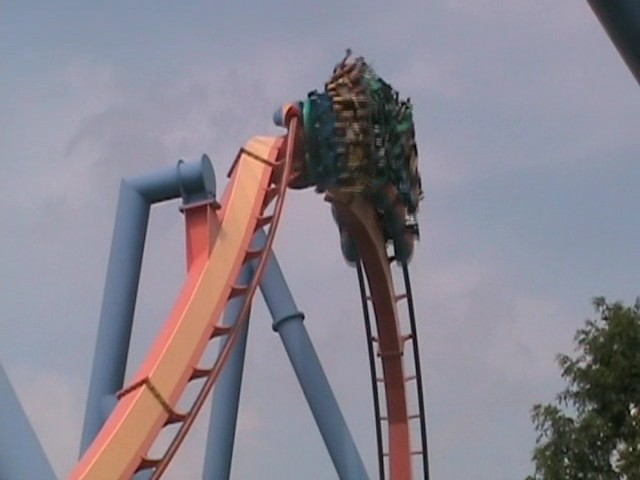
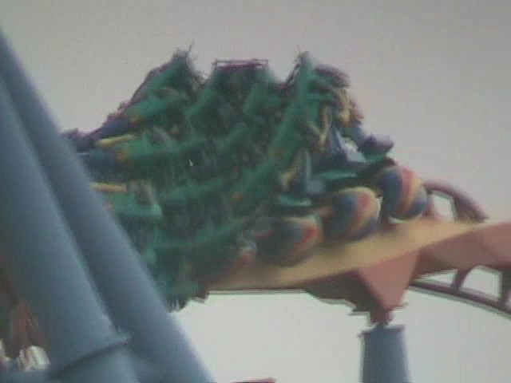
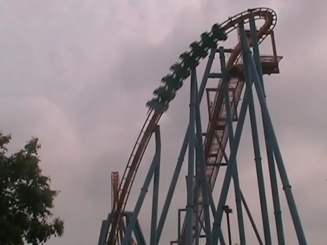

| |
Talon Review

We're here at Dorney Park. After getting in the typical B&M seats, the floor drops and we're off. We begin to climb the lifthill. As you climb the lifthill, you get a great view of Dorney's Parking Lot. How lovely. However, if you look down, you'll notice something intersting. Along the catwalk, the park placed a couple signs stating "No turning back." and "Almost there." So that definetly adds a nice little touch to the ride (And if you're riding with anyone with coasterphobia. Those signs will freak them out even more, which will make the ride much funnier). However, no more time for that. It's time for the ride to begin. We then twist down the first drop. It's a nice first drop and gives the ride some speed. It's not insane or anything, but hey. It's still got some good speed. After that, we head up into a vertical loop. It's not an insane vertical loop. You're not pressed into your seat and flung through like on Kumba or Montu. Afterwards, we head up into a Zero G Roll. All right. Now we're gonna get some insane whipping action. Right? Nope. Talon meanders through the Zero G Roll. Ok, I have to stop here. In case you haven't noticed from this review, Talon isn't exactly a forceful ride. Which isn't horrible, but it's not that great. But what I don't get is people saying "TALON IS SO GREAT!!!! IT'S SO FORCEFUL!!!!!!" Umm, what the hell are you smoking? No it's not. It's about on the same force level as Silver Bullet. Which isn't terrible considering how Silver Bullet is getting better with age. But from the reviews other enthusiasts give it, you'd go in expecting Talon to be the Montu of the North, which really really bugs me. But anyways, back to the review. After the heartline spin, we head into an immelman loop. While not particuarly forceful or insane, it does have a nice swooping feeling to it. And speaking of which, after you swoop out of the immelman, you head straight into a big swooping turn. And as you can tell, it's very swoopy. After that big swooping turnaround, you pretty much just meander around for a few seconds until you head down a mini drop that actually gives you some decent forces and maintains it through a small turnaround that leads you straight into a corkscrew that while I will admit, is no Montu. I repeat. It is no Montu. However, it does have some decent whip to it. This section of the ride right here is what I like to call the Silver Bullet Helix Section. It's the section of a less forceful (I won't say forceless) B&M Invert where the ride breifly really picks up. While you obviously tell that this happens in Silver Bullet's helix, this is where it happens on Talon. So I don't just badmouth Talon just because. I recognize it's good moments. The helix afterwards however, starts to wear thin. I mean, it's still fun and mildly forceful, but we arn't on anything amazing here. After that, we go through a small little dip to bring on a last minute giggle before heading up into the brake run. While I admit that Talon is a good ride and very fun to ride, it's far from the best of the B&M Invert Line Up. So while it may be an incredibly overrated ride, it's still a damn good ride that's certainly worth a ride.
7/10
Location: Dorney Park
Opened: 2001
Built by: B&M
Last Ridden: August 15, 2008
Talon Photos




Home
|